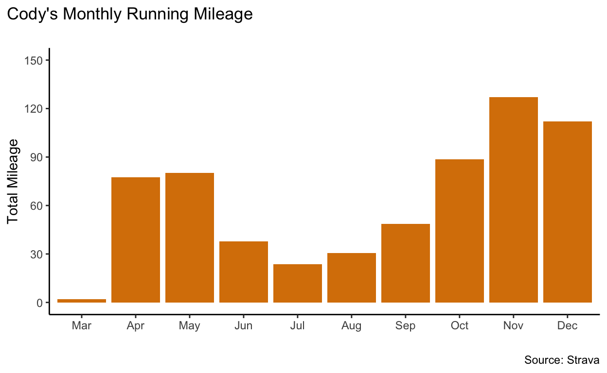
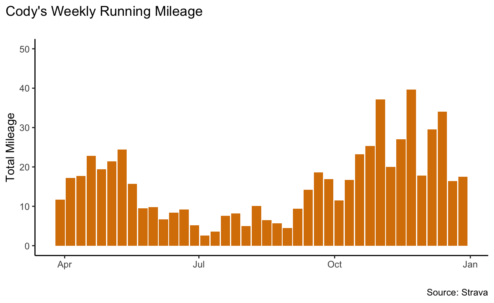
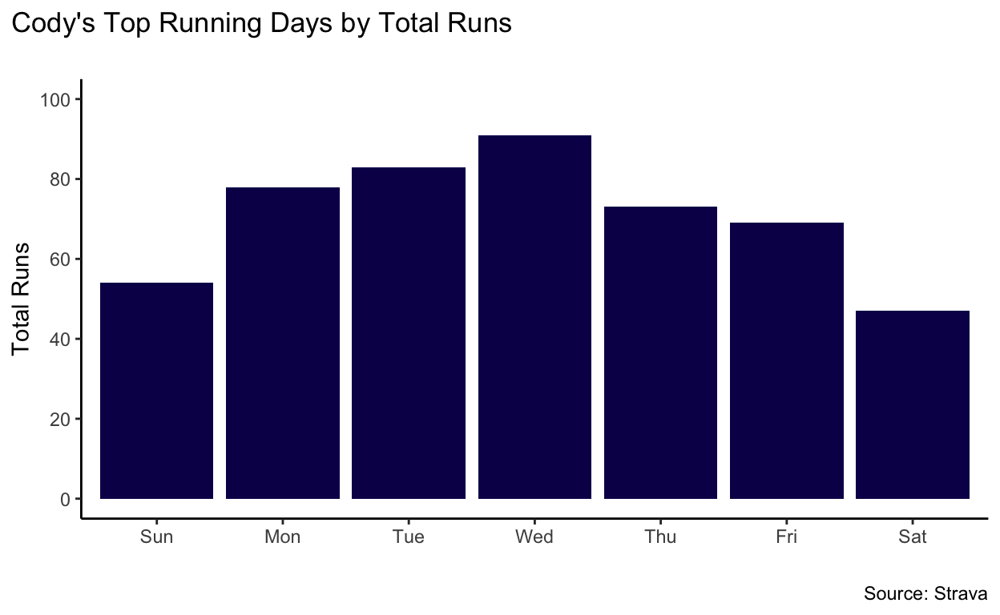
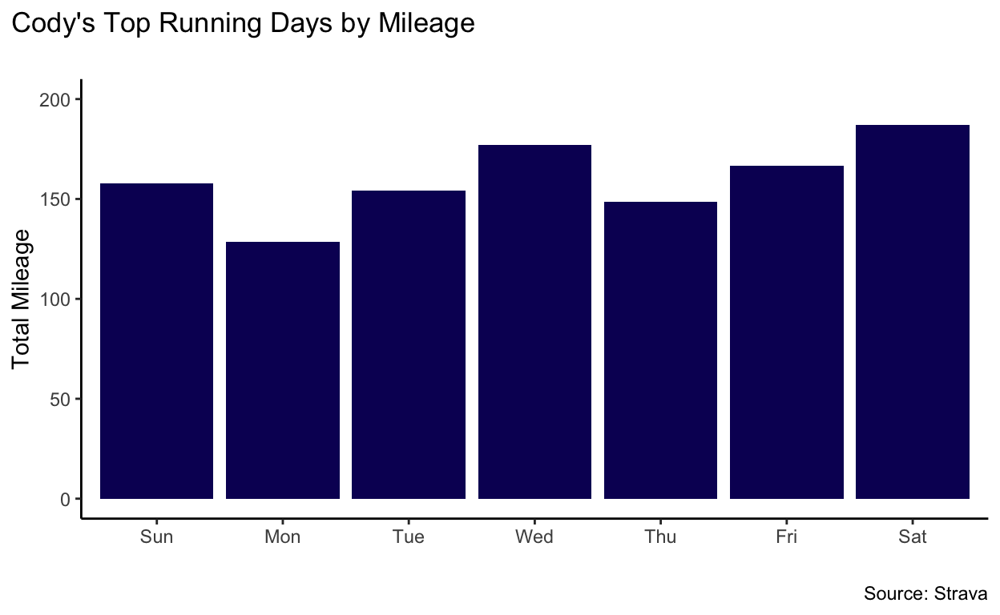
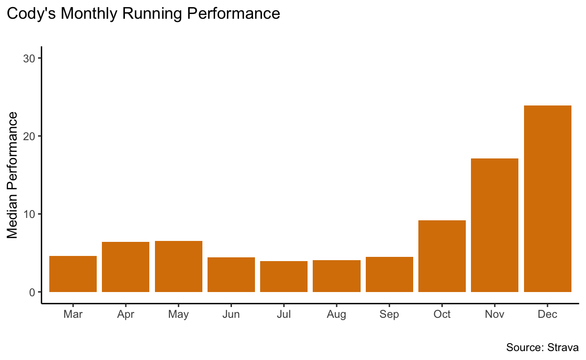

Hello, folks! In this post I’ll be looking at my running performance over the last year by analyzing my running data from the Strava app. Before I start that, here’s a bit of background on how I’ve experienced a new-found love of running over the last year and what led to this in the first place.
I believe I’m not the first to point out that this year has been a weird one. Societally, it’s been mostly pretty shitty (until the second week in November when things started looking up a bit). The pandemic has upended every facet of life, hundreds of thousands of people have died needlessly, there were kiler hornets, and I’m sure I’m forgetting about ten other big terrible things that happened (feel free point them out if you feel so inclined). Personally, this year has been a mixed bag for my wife and me. We’ve felt all the terrible things going on in the world at large, and our lives look so much different than we thought they would. While we’ve had our fair share of pain and grief caused by the pandemic, we were left in a relatively good spot - we both work from home in stable jobs, we were able to buy a house in a neighborhood that we love, and we were able to plan to start our family. We don’t take that for granted at all, and we truly grieve with those whose lives have been completely devastated over the last year.
When the pandemic shut everything down for us starting in mid March, one of the more noticeable things to stop for us was working out at the gym. In the wake of that, my wife and I decided to start running more. At the time we were living on the upper floor in a pretty small duplex so we didn’t have a whole lot of space to do anything more than very tame bodyweight workouts inside, and we knew that we needed a physical outlet to get away from the stress of the pandemic and of me finishing my final semester of grad school without the confines of our small living space.
Enter running. I’ve never been a complete stranger to running over the course of my life, but I’ve also never really embraced it. There have been various fits and starts of running more frequently, but it’s never been what I would call sustained. Mar had periods of more dedicated, sustainable running over the last decade or so, even training for and running a half-marathon. She could always handle distance better than I could, but I liked running faster. Since we moved to Minneapolis in 2017 up until last March, Mar and I ran an average of once every week or two probably, never more than 2 or 3 miles at a time. We liked to run around our first neighborhood here, and there were a few months where we would go run a 3 ish mile loop around a nice lake every weekend. But I’ve never exactly loved running. I’ve done it because I know aerobic exercise is good for me and because it’s a good way for Mar and I to workout together every so often, but I’ve always liked lifting and bodyweights and sprint-type workouts a lot better. Until last March, the farthest I think I’d ever run was five miles tops, probably less. I could do a mile decently fast for a normal non-runner (I think I ran a sub-six minute mile a few times in college), but I never liked running longer distances than that.
Fast forward to now, close to a year since we started that journey, I’ve run almost 1,000 miles since April, the majority of it coming in the last five or so months. Mar and I started running as a way of coping once things shutdown, but somewhere along the way it became a new thing for me, something that I genuinely started to love. We started out slow, running a mile and half or two most days, with a long run of 5.5 or 6 on Friday. Our first week of 20 miles, probably in late April or early May, was a big milestone, as was the time we ran 9 miles (thrice around our normal Friday 3 mile lake loop). June and July brought a bit of a slow-down again, with some minor injuries and tweaks, moving into our new house, and the heat of the summer. But in September I bought a new pair of running shoes (my first in probably six years) and started to get back into it again, and it was the start of a real thing for me. Mar and I still ran together from time to time, but she was in the throes of first trimester nausea, and I was increasing my mileage to 25 to 30 miles a week. I did a ten mile run in mid October at a decent pace, and that might have been what sealed it for me. In November I set out to do another 10-miler but through a weird series of events I ended up running my first half-marathon - my time was 1:50 ish, which while not competitive, is pretty good for someone who started running in earnest in March and had never run a half before. Since then I’ve been doing 30-35 mile weeks with some rest weeks here and there, and I’ve really gotten into it. I found my first running podcasts around a month ago, and started to plan my training more strategically based on what I was learning, easing my pace, incorporating strides, and dedicating one run every week or two to be more of an intervals workout.
The throes of winter cold and snow have descended upon Minneapolis by now, so I imagine my training will slow down a bit until mid-March or so, but all of this to say that over the last 9 months I’ve found a new love of running that will be with me for a long time I think. Once the winter thaw comes I’d like to start training for my first marathon (even if it is just by myself, but hopefully I’ll be able to find a race by then), and who knows what will come after that.
I’ve also started to combine this new-found love of running with my love of data. In October I started downloading my running data from Strava and it’s been fun to explore it since. Today’s post will be a more formal dive into my running performance over the last year, primarily to help me see how far I’ve come and allow me to be proud of myself (something I have a really hard time with most days). Here we go! ***
So! To start. I’ll have two broad sections to this analysis. First I’ll do a basic descriptive look at my running performance in 2020, cutting the data by week, month, day of the week, etc. Second, I’ll make an interactive map of all my runs using leaflet so we can visualize where I run and what my typical routes look like.
I downloaded my Strava account data from the online site, which resulted in getting a big zipped folder of a lot of different files. I know I published this post in February of 2021, but I decided to just analyze the data from 2020 to keep it simple. There are two pieces of that I incorporate here. The first is an overview file of all my activities I’ve recorded on Strava, including the name, date, time, distance, pace, etc. The second is a folder of all of the GPS location data for all of the activities, in GPX format. I’ll get back to the GPX location files here in a bit, and start with the raw activities file.
This code chunk loads my packages using pacman and imports and cleans the data from the activities file. Most of the cleaning is converting paces and distances into the units I generally use (miles instead of kilometers, pace in minutes per mile, etc.). Also, shoutout to the lubridate package for making the date-time parsing so painless.
One thing I want to point out is the creation of the multiplier and performance variables towards the bottom of the chunk. I wanted a way to compare my runs in a more standardized way that didn’t just use distance or average pace as the metric. Those are instructive indicators, but only to a certain point; I can run long distances, but if my pace isn’t where I want it to be then it doesn’t mean as much. Likewise, I can run at a fast pace, but if I can’t sustain it for longer distances, it also doesn’t mean as much. The performance metric I thought of calculates the distance divided by pace as a multiplier for how long a run is. If I run 60ish minutes for 8 miles at 8 minutes a mile, I’ll get a multiplier of around 1, which leaves my performance at ~60. As opposed to if I run 60 minutes for 10 miles at 6 minutes a mile (which I absolutely can not do), the multiplier would be 1.4ish, and the performance would be 85ish. More on this later.
First things first, I want to do a basic look at my running mileage over time. I’ll start by doing a look by month, then by week.
Here’s the monthly look.

Now for weekly:

These two graphs show more or less what I explained earlier. My mileage increased throughout spring and early summer 2020, plummeted during the mid-summer, and then started to pick back up again in the fall and through the end of the year to its highest levels. It’s interesting how much the weekly look reveals that the monthly hides - even in the valley of the summer and the peaks of the fall, there’s still a lot of ups and downs. Some of that variation is the ebb and flow of my work and recovery weeks, and some of it is the weather getting harder with snow and such. Though you can’t see it, this bouncy pattern has continued into the new year. One thing I’d like to work on being more consistent with my weekly mileage - trying to ease into smoother increases and decreases in mileage rather than the stark up and downs we see here.
Obviously I knew approximately what these charts would look like. One thing I’m not as sure of how my runs break down on days of the week and time of day, both in terms of the number of runs and total mileage. This next graphs look at both the number of runs and total mileage by day of the week.

This is new to me! Wednesdays were my biggest days for running overall and second biggest day for mileage - I wasn’t expecting that. I was thinking Fridays might be my biggest running day, but I guess not. Saturdays were my biggest days mileage-wise, which isn’t a surprise as that’s mroe a long run day for most runners (including me), but Wednesdays got close to it. The pattern seems to have been more runs with lower mileage on Wednesdays and fewer runs with higher mileage on Saturdays. So interesting.
Now I want to go beyond the mileage piece and look more at the performance aspect that I touched on earlier. While it’s insightful to look at distance, it’s also instructive to think about my efficiency and speed as a runner. Enter the calculation I talked about above for performance. There are a few other caveats that I want to put in here though. While the calculation I came up with (imho) is pretty good and standardizes a lot of a run, it can fall victim to extremes, either mileage wise or speed wise. Middle distance and smooth pace is more reliable. So I’ll take it with a bit of a grain of salt, and you probably should, too.
What I’ll do with the performance metric is chart it across month and week, probably as a median to do a better job of smoothing outliers during those periods. I had half a mind to do a simple regression to try to pick out the best predictors of my performance but honestly, the time series nature of it would make any significant or interesting results more or less useless. I don’t do time series analysis very much and it’s hard to do right so I figure I won’t wade into it this time. (Side note, I do want to get into a bit more modelling in this blog space, but I don’t think these are the right data. Maybe I could do that for my running when I have more months’ worth of data and it’s such a clearly linear trend of increased mileage and performance.)
Here’s a look at my median performance by month.

After seeing the grpahs for mileage, it shouldn’t be a surprise that my performance goes up continually once the fall settles in. Here’s the same look by week for a more granular look.

This also checks out - not sure when the week is that I had the massive median performance. It could have been mid November when I ran my first half marathon. That would make sense.
I wanted to include a section in here with a map of my routes, but for some reason, the leaflet package doesn’t want to work with R Markdown knitting right now. So I took it out for now, but hopefully I’ll be able to figure it out and get it in here at a later time. If I do, I’ll be sure to mention it!
But this is all for now. I could do a lot more with this, but honestly, I just want to publish this. I’ve been working on it for several months now and I’ve only just worked up the motivation to finish it. So here it is! Woo!